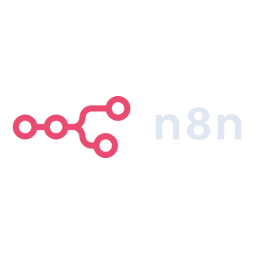
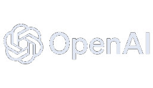
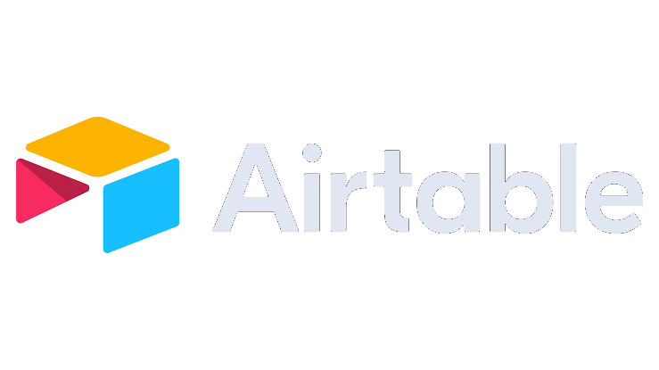
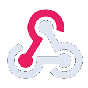
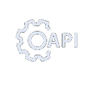

01
AI-Powered Automation
Using AI to extract, organize, and process business information.
‚ÜóFrom AI-powered quotation systems to automated membership management, I build workflows that connect your tools, reduce repetitive tasks, and keep operations organized.
I’m Babatunde Seriki, an AI Automation Specialist focused on creating practical systems that solve everyday business challenges.
I work with automation platforms, AI models, databases, and communication tools to build connected workflows that simplify operations. My projects include intelligent quotation processing, membership management automation, and customer inquiry routing.
More about working together ‚ÜóThoughtful automation for the steps that slow good work down.
Using AI to extract, organize, and process business information.
‚ÜóBuilding connected systems with triggers, conditions, scheduled actions, and routing logic.
‚ÜóConnecting forms, databases, email services, and APIs.
‚ÜóTransforming incoming information into structured, actionable business records.
‚ÜóA flexible stack for connecting information, services, and people.

n8n
OpenAI
Airtable
Webhooks
APIsReal-world automation concepts, designed to make everyday operations more manageable.
Processes customer quotation requests from Gmail. OpenAI extracts the requested products and quantities, Airtable supplies the prices, and the workflow calculates totals and prepares a Gmail draft for staff to review before sending.
One connected project for registration, expiry monitoring, and member renewals.
Part of the Gym Management Automation project: finds an existing member, checks renewal conditions, updates their expiry date in Airtable, and sends a Gmail message.
Classifies new inquiries and routes sales, support, and general messages consistently.
A clear process keeps each workflow grounded in the way your business operates.
Identify the business task and the manual bottlenecks.
Map triggers, integrations, conditions, and outcomes.
Connect tools, validate information, and test execution paths.
Check workflow behavior and refine the system.
Let’s explore how connected workflows can simplify your business operations.